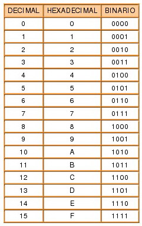
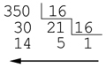
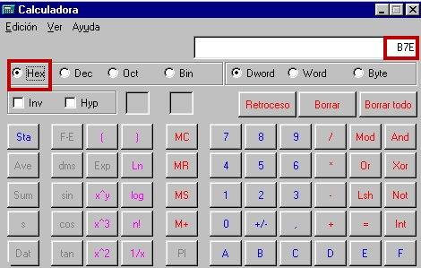

2.6. El sistema hexadecimal
Aunque los circuitos electrónicos digitales y los ordenadores utilizan el sistema binario, trabajar con este sistema de numeración resulta pesado, y suele producir equivocaciones cuando se trabaja con números binarios demasiado largos.
El sistema hexadecimal está en base 16, sus números están representados por los 10 primeros dígitos de la numeración decimal, y el intervalo que va del número 10 al 15 están representados por las letras del alfabeto de la A a la F.
Actualmente el sistema hexadecimal es uno de los más utilizados en el procesamiento de datos, debido principalmente a 2 ventajas:
La primera ventaja es la simplificación en la escritura de los números decimales, cada 4 cifras binarias se representan por una hexadecimal.
La segunda es que cada cifra hexadecimal se pueden expresar mediante 4 cifras binarias, con lo que se facilita la transposición entre estos 2 sistemas. Para convertir un número binario en hexadecimal se realiza el mismo proceso, pero a la inversa.
Ejemplo:
|
Número Hexadecimal: B7E16) B: 1011 (11) 7: 0111 E: 1110 (14) |
Número Binario: 1011 0111 11102) |
Para pasar del número hexadecimal al sistema decimal, se han de multiplicar los dígitos hexadecimales por las distintas potencias de base 16 que representan cada dígito del sistema de numeración hexadecimal (160, 161, 162...).
Ejemplo:
B7E16) = 11•162 + 7•161 + 14•160 = 2816 + 112 + 14 = 2.94210)
A la inversa, para convertir el número decimal en hexadecimal, éste se irá dividiendo por el número 16 sucesivamente hasta que ya no se puedan realizar más divisiones con el mismo número. El número hexadecimal resultante estará formado por el último cociente seguido de todos los restos sucesivos obtenidos desde el último hasta el primero. Veamos, por ejemplo, qué sucede con el 350
|
Expresión decimal: 
|
Nº Hexadecimal: 15E16) |
Otra posibilidad en la conversión de números decimales y hexadecimales es utilizar los binarios como intermediarios, es decir, en cualquiera de los sentidos, se obtendría en primer lugar el número binario y después éste pasaría al código definitivo.
Por último, otra posibilidad de cálculo la ofrecen las calculadoras de sobremesa o las que suelen venir con algunos sistemas operativos. En ese caso basta teclear la cantidad estando seleccionado un sistema: binario, octal, hexadecimal o decimal, y después conmutar al sistema de destino deseado y el número aparecerá automáticamente.
Aquí vemos la expresión decimal:
y aquí la expresión hexadecimal:

Obra publicada con Licencia Creative Commons Reconocimiento No comercial Compartir igual 4.0